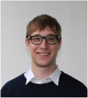
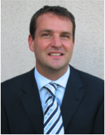
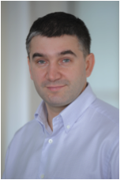
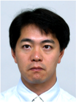
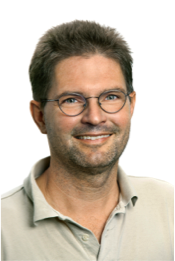
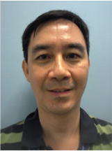
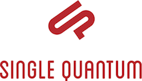
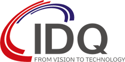

Industry Session
The industry session will feature:
For more information, please contact Matthew McKague.
Panel Discussion
Topic: “Real world challenges for Quantum Cryptography.”
Panel members:
- Matthias Christandl – ETH Zurich (panel chair)
Matthias Christandl is assistant professor for quantum information theory at the ETH Zurich. He received his diploma in physics from ETH Zurich in 2002. In 2006, he completed his PhD, supervised by Artur Ekert, on the topic of quantum entanglement at the University of Cambridge. He then took up the post as Thomas Nevile Research Fellow at Magdalene College, Cambridge. In 2008, he became Junior professor at the LMU Munich, before returning to ETH Zurich in 2010 in his current position. Matthias’ research is published both in leading physics journals (e.g. 11 PRLs) and the proceedings of highly regarded computer science conferences (e.g. STOC’11 and FOCS’12); his co-authored article on quantum communication through spin chains has been cited more than 350 times. Matthias has been awarded the Cambridge University Hamilton prize and a PhD prize of the German Physical Society. Serving the need of the growing community of quantum cryptographers, he co-founded QCRYPT and presided over its first edition in Zurich in 2011. Matthias is married and has a two-year-old son.
- Gregoire Ribordy – ID Quantique
Mr. Gregoire Ribordy, co-founder and CEO, has over 15 years of experience in various R&D and management roles in the field of optical measurements and communication systems. He founded ID Quantique in 2001 and has managed the company since then. Prior to this he was a research fellow at the Group of Applied Physics of the University of Geneva between 1997 and 2001. In this position he actively developed quantum cryptography technology. Between 1995 and 1996, Mr. Ribordy worked for one year in the R&D division of Nikon Corp. in Tokyo.
Mr. Ribordy is the recipient of several international awards, and holds patents in the area of quantum cryptography and quantum information technology.
- Serguei Beloussov – Runa Capital
Mr. Beloussov is a self-made entrepreneur and business executive with an outstanding 20-year track record in building, growing and leading high-performing, multi-national high-tech companies in North America, Europe and Asia.
Serguei is currently focused on two companies that he founded – Runa Capital, where he is a Senior Founding Partner, and Parallels, where he is Chairman of the Board and Chief Architect, as well as Chairman of the Board of Trustees of the Russian Quantum Center.
Runa Capital is a technology-focused venture capital firm (total size over $135M) a with focus on cloud computing, internet and mobile applications. The key execution point is to select promising teams and drive them in the global marketplace, turning them into international champions.
Parallels is a global leader in cloud services enablement and desktop virtualization software.
- Akio Tajima – NEC
Akio Tajima received B.E. and M.E. degrees in electrical engineering from the Tokyo Institute of Technology, Tokyo, Japan, in 1990 and 1992, respectively. In 1992, he joined NEC Corporation, Kawasaki, Japan, where he is currently a principal researcher in the Green Platform Research Laboratories and is engaged in the study of next generation photonic networks. He received the chairman's prize from technical committee on communication systems of IEICE in 2010.
- Andreas Poppe – AIT, the Austrian Intitute of Technology
After his PhD in Laser sciences (frequency comb with oscillators) at the Vienna University of Technologies he commercialized a novel high-power oscillator at the small spin-off company FemtoLasers in Vienna. Back in quantum science in 2002 at Anton Zeilinger's institute at the University of Vienna, he developed different sources of entangled photon pairs, including an overall entanglement based QKD system. For the SECOQC-demonstration of the QKD-network he changed to AIT Austrian Institute of Technology in 2008. The next cycle of commercialization, this time for quantum sciences, is ready now to be presented at QCRYPT.
- Chan Shih Ping Richard – DSO, the Singapore national defence R&D organization
Richard Chan is Programme Director for Information Security at DSO National Laboratories and has been with DSO since 1998. The programme focuses on research in Information Security, Communications Security, and Cryptology for Government applications. His research interests include High Performance Computing, Signal Processing, and Cryptology.
Dr Chan obtained his Ph.D. from the University of Cambridge in 1988 in Algebraic Number Theory. He was Associate Professor of Mathematics at NUS until 1998.
Industry Exhibits
During the course of the conference we will have exhibits, accessible during breaks, presented by:

Single Quantum provides superconducting nanowire single photon detectors (SNSPDs), which are sensitive to single photons from the UV to the near-infrared and have superior performance when it comes to quantum efficiency, time resolution, dark noise and dead time.
We are the first company offering a complete closed cycle SNSPD with a built-in cryogenic cooler, which requires no liquid helium refills.
The AIT, Austrian Institute of Technology takes a leading position in the Austrian innovation system and a key role in Europe as the research and technology organization focusing on the key infrastructure topics of the future. AIT provides research and technological development to realize basic innovations for the next generation of infrastructure related technologies in the fields of health & environment, energy, mobility and safety and security. These technological research areas are supplemented by the competence in foresight and policy development. As a national and international network node at the interface of science and industry, AIT enables innovation through its scientific-technological expertise, market experience, tight customer relationships and high quality research infrastructure.
According to this mission, AIT is strategically positioned as a key player in the Austrian and European innovation system by performing applied research for and enabling the market exploitation of innovative infrastructure related solutions. This functionality of “bridging the gap between research and technology commercialization” is seen as a fundamental role for commercialization of new technologies and strengthening economic development.
The Research Service “Optical Quantum Technology” is the only research unit worldwide which developed a quantum key distribution system based on entanglement. Based on the fundamental research of Anton Zeilinger at the University Vienna we could show the functional demonstration of this installation within the EU project SECOQC in 2008. In the meantime we offer “AIT QKD EPR-SYS-405” system as standard product. Our research is focused on the improvement of QKD systems as well as on the different building blocks. Thus we developed single photon detectors, time tagging modules, polarization control as well as specific algorithms for the QKD software stack.

ID Quantique has a growing scientific instrumentation business, where the company's core Quantum Photonics technologies provide innovative solutions for industrial, commercial and research applications. Its product offering includes photon-counters based on avalanche photodiodes in Geiger mode for the visible and infrared regions of the optical spectrum. It also includes short-pulse laser sources and a time to digital converter. Beside the scientific instrumentation division, IDQ is also the leader in Quantum Cryptography for commercial and R&D application. Additionally IDQ also offers quantum random number generator and high-performance multi-protocol network encryption solutions.
ID Quantique will have on display:
- The new id210, with an InGaAs/InP avalanche photodiode, single photon detection system at telecom wavelengths with performance in high-speed gating at internal or external frequencies up to 100MHz detector.
- The id220, free running single photon detection module for the near infrared range (900 - 1700nm) with low dark count and afterpulsing rate.
- The id100 family; single photon detection for the VIS range. With a timing resolution of only 40ps and a dead time of 45ns, this module outperforms existing commercial detectors in all applications requiring single photon detection with high timing accuracy
- Quantis; a physical random number generator exploiting an elementary quantum optics process
SeQureNet is a start-up company founded in 2008 as a spin-off from the Quantum Information team of Telecom ParisTech. The domain of expertise of SeQureNet’s team of scientists and engineers are network security, cryptography, quantum information and software development. The R&D work of SeQureNet is currently focused on the development of Continuous-Variable Quantum Key Distribution (CVQKD) technology.
A French research project, SEQURE (2008-2011), resulted in a CVQKD demonstrator that worked continuously during several months on a 17Km link with 5.6dB losses; the resulting keys were used in Thales MISTRAL encryptors. That project involved Thales Research and Technologies, Thales Communications, Telecom Paristech and Institut d'Optique Graduate School; SeQureNet was in charge of the deployment of the demonstration and its maintenance.
SeQureNet competed and won prizes in two French innovation competitions in 2007 and 2008. The company is involved in several collaborations with the leaders in the domain of QKD and particularly CVQKD: SeQureNet is a partner of an FP7 CHIST-ERA project, HIPERCOM, which also involves Telecom ParisTech, Institut d’Optique Graduate School, Université Libre de Bruxelles, University of York and Max-Planck Institute, and is focused on Continuous Variables Quantum Communications, including CVQKD; it participates with Telecom Paristech to a FP7 Marie-Curie IAPP Project, Q-CERT, which also involves both the academic and industrial leaders of DVQKD, namely the GAP group of the Université de Genève and IdQuantique. SeQureNet and Telecom ParisTech are also partners of an international research project, FREQUENCY, managed in France by Telecom ParisTech, which is built on collaborations with several Canadian research teams, at the universities of Montreal, Calgary and Waterloo. Finally, SeQureNet licensed from Thales a patent (EP1825633) covering the current optical scheme of CVQKD devices. This allowed SeQureNet to develop the first commercial CVQKD device, for which SeQureNet provides customization services for laboratory experiments. High-performance post-processing software (including multidimensional protocols enabling CVQKD at low SNRs, error-correction, privacy amplification) is available for experimentalists who focus on hardware development stability and want to extract secret keys from the raw data provided by their experiments.